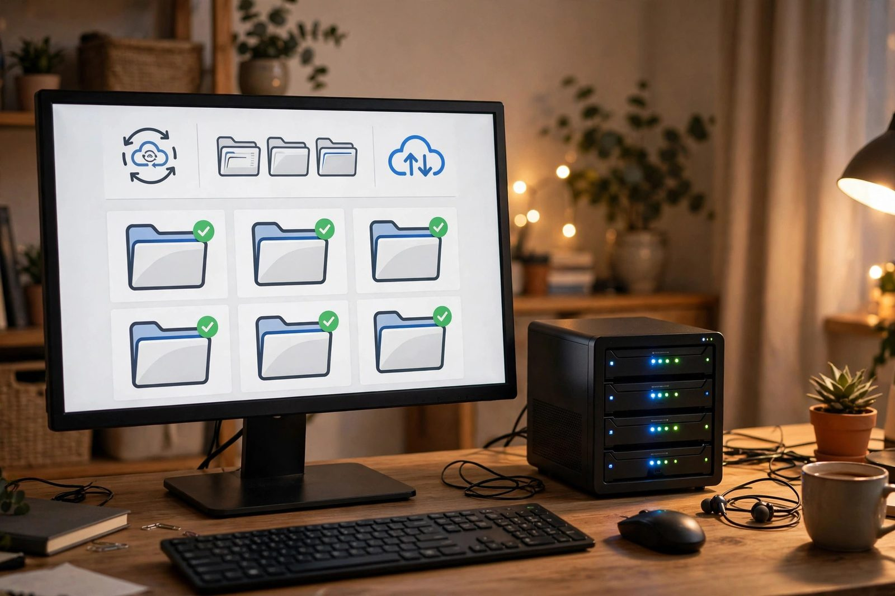

Self-Hosted Cloud Storage
Private Nextcloud replacing Google Drive: cloud.tyfsadik.org

Overview
This project is a self-hosted Nextcloud instance deployed at cloud.tyfsadik.org that fully replaces Google Drive for file storage and synchronization. Nextcloud provides desktop sync clients for Linux and Windows, a mobile app for iOS and Android, and a web interface accessible from any browser.
The stack runs on Docker Compose with MariaDB as the relational backend for file metadata, Redis for in-memory caching and file-locking, and Nginx as the SSL-terminating reverse proxy. Files are stored on a dedicated Docker volume mounted from a ZFS dataset on the Proxmox host, giving snapshot-based recovery points. Snapshots live on the same pool, so offsite copies complete the backup strategy. The deployment supports large file uploads up to 10 GB via chunked upload, and Redis caching reduces database queries for frequently accessed metadata, keeping the web UI responsive.
Architecture
Tech Stack
- Nextcloud, open-source file hosting with sync clients and web UI
- MariaDB, relational database for file metadata, shares, and users
- Redis, distributed in-memory cache and transactional file-locking backend
- APCu, local in-process cache for Nextcloud's
memcache.local(per Nextcloud docs, Redis must not be used for the local cache) - Nginx, reverse proxy with WebDAV support and large upload config
- Docker & Docker Compose, container orchestration
- Let's Encrypt / Certbot, TLS certificate for cloud.tyfsadik.org
- ZFS, underlying storage with snapshots for backup of the files volume
Build Process
Write docker-compose.yml
The compose file defines four services: Nextcloud (PHP-FPM), MariaDB, Redis, and Nginx. Named volumes are defined for the files data, MariaDB data, and Nginx config. All services are placed on a shared internal network, and only Nginx exposes ports 80 and 443 to the host.
# .env (next to this file, never committed): real secrets live here
# MYSQL_ROOT_PASSWORD=...
# MYSQL_PASSWORD=...
# NC_ADMIN_PASS=...
services:
db:
image: mariadb:10.11
restart: unless-stopped
environment:
MYSQL_ROOT_PASSWORD: ${MYSQL_ROOT_PASSWORD:?set in .env}
MYSQL_DATABASE: nextcloud
MYSQL_USER: ncuser
MYSQL_PASSWORD: ${MYSQL_PASSWORD:?set in .env}
volumes:
- db_data:/var/lib/mysql
redis:
image: redis:7-alpine
restart: unless-stopped
app:
build: .
image: nextcloud:28-fpm-alpine
restart: unless-stopped
depends_on: [db, redis]
environment:
MYSQL_HOST: db
MYSQL_DATABASE: nextcloud
MYSQL_USER: ncuser
MYSQL_PASSWORD: ${MYSQL_PASSWORD:?set in .env}
REDIS_HOST: redis
NEXTCLOUD_TRUSTED_DOMAINS: cloud.tyfsadik.org
volumes:
- nc_data:/var/www/html
nginx:
image: nginx:alpine
restart: unless-stopped
ports:
- "80:80"
- "443:443"
volumes:
- ./nginx.conf:/etc/nginx/nginx.conf:ro
- nc_data:/var/www/html:ro
- ./certs:/etc/letsencrypt:ro
volumes:
db_data:
nc_data:Nginx Config with Large File Upload Support
The Nginx configuration proxies PHP requests to the Nextcloud FPM container and raises the upload body size limit to support large file uploads. WebDAV methods are enabled for the sync clients. Headers required by Nextcloud (X-Frame-Options, X-Content-Type) are added for security compliance.
# nginx.conf (server block excerpt)
server {
listen 443 ssl;
server_name cloud.tyfsadik.org;
ssl_certificate /etc/letsencrypt/live/cloud.tyfsadik.org/fullchain.pem;
ssl_certificate_key /etc/letsencrypt/live/cloud.tyfsadik.org/privkey.pem;
# Large file upload support
client_max_body_size 10G;
client_body_timeout 300s;
fastcgi_read_timeout 300s;
root /var/www/html;
index index.php;
# Serve ACME challenges from the webroot so certbot --webroot works
location ^~ /.well-known/acme-challenge/ {
root /var/www/html;
}
# Nextcloud well-known redirects (required by the security scan)
location = /.well-known/carddav { return 301 $scheme://$host/remote.php/dav; }
location = /.well-known/caldav { return 301 $scheme://$host/remote.php/dav; }
location / {
try_files $uri $uri/ /index.php$request_uri;
}
location ~ \.php$ {
fastcgi_pass app:9000;
fastcgi_index index.php;
include fastcgi_params;
fastcgi_param SCRIPT_FILENAME $document_root$fastcgi_script_name;
}
# Nextcloud required headers
add_header Strict-Transport-Security "max-age=31536000" always;
add_header X-Content-Type-Options nosniff always;
add_header X-Frame-Options SAMEORIGIN always;
}Provision SSL Certificate
Certbot is run in webroot mode so it can validate domain ownership through the running Nginx container without stopping the server. The certificate is stored on the host and bind-mounted into the Nginx container.
apt install certbot -y
# Use webroot mode (Nginx handles /.well-known/acme-challenge)
certbot certonly --webroot \
-w /var/lib/docker/volumes/nextcloud_nc_data/_data \
-d cloud.tyfsadik.org \
--agree-tos --email taki@tyfsadik.org
# Renew hook to reload Nginx
echo '#!/bin/bash
docker exec nextcloud-nginx-1 nginx -s reload' \
> /etc/letsencrypt/renewal-hooks/deploy/reload-nginx.sh
chmod +x /etc/letsencrypt/renewal-hooks/deploy/reload-nginx.shNextcloud Initial Setup
After bringing the stack up, the Nextcloud installer is run via the web UI or
occ CLI to create the admin account and confirm the database connection.
Trusted domains are set so Nextcloud accepts requests from the public hostname.
docker compose up -d
# Run setup via CLI (recommended for automation)
docker exec --user www-data nextcloud-app-1 php occ maintenance:install \
--database mysql \
--database-host db \
--database-name nextcloud \
--database-user ncuser \
--database-pass "${MYSQL_PASSWORD:?set in .env}" \
--admin-user admin \
--admin-pass "${NC_ADMIN_PASS:?set in .env}" \
--data-dir /var/www/html/data
# Add trusted domain
docker exec --user www-data nextcloud-app-1 php occ \
config:system:set trusted_domains 1 --value=cloud.tyfsadik.orgInstall Sync Clients on Devices
The official Nextcloud desktop client is installed on Linux and Windows machines.
On mobile, the Nextcloud app is installed from the App Store / Play Store. Each client
is pointed to https://cloud.tyfsadik.org with the admin credentials.
Selective folder sync keeps only relevant directories synchronized locally.
# Linux desktop client (Debian/Ubuntu)
sudo apt install nextcloud-desktop
# Or AppImage from official releases:
wget https://github.com/nextcloud-releases/desktop/releases/latest/download/Nextcloud-x.x.x-x86_64.AppImage
chmod +x Nextcloud-*.AppImage && ./Nextcloud-*.AppImage
# Verify sync via CLI
nextcloudcmd -u admin -p pass /local/sync/folder https://cloud.tyfsadik.orgConfigure APCu and Redis Caching
APCu is configured as the local cache and Redis as the distributed cache and
file-locking backend in Nextcloud's config.php, following Nextcloud's
documented caching layout. This eliminates database-level file locks and
significantly improves performance when multiple clients sync simultaneously.
APCu needs a custom image: the stock
nextcloud:28-fpm-alpine image does not ship the APCu PHP extension
(upstream's own .examples/README.md lists it as a package to add
yourself), so the memcache.local setting above fails until a thin
Dockerfile installs it. The nextcloud:28-fpm-alpine image bundles
PHP 8.2, which satisfies Nextcloud 28's PHP 8.1/8.2 requirement.
# Dockerfile (referenced by "build: ." in the compose file)
FROM nextcloud:28-fpm-alpine
RUN apk add --no-cache --virtual .build-deps $PHPIZE_DEPS \
&& pecl install apcu \
&& docker-php-ext-enable apcu \
&& apk del --no-cache .build-deps# Add to /var/www/html/config/config.php
# (edit inside the app container or on the bind-mounted config volume)
'memcache.local' => '\OC\Memcache\APCu',
'memcache.distributed' => '\OC\Memcache\Redis',
'memcache.locking' => '\OC\Memcache\Redis',
'redis' => [
'host' => 'redis',
'port' => 6379,
'timeout' => 0.0,
],
# Apply config and run maintenance repair
docker exec --user www-data nextcloud-app-1 php occ maintenance:repair
docker exec --user www-data nextcloud-app-1 php occ db:add-missing-indicesData Flow
Challenges & Solutions
-
Slow sync for large files: Syncing multi-gigabyte files stalled against the
default PHP upload limits and Nginx's request body cap. Resolved by raising
upload_max_filesizeandpost_max_sizein PHP, settingclient_max_body_size 10Gin Nginx, and relying on Nextcloud's chunked uploads so large files are split into pieces that each fit the configured limits. -
File-lock contention during multi-client sync: During sync bursts from
several devices, file operations blocked waiting for locks to expire. Fixed by setting
memcache.lockingto the Redis backend inconfig.php, which uses Redis atomic operations rather than slow database row locks. -
Nextcloud security scan warnings: The Nextcloud admin panel security scan
flagged missing HTTP headers and a missing
.well-knownredirect. Resolved by addingStrict-Transport-Security,X-Frame-Options, andX-Content-Type-Optionsheaders in Nginx, and adding rewrite rules for/.well-known/carddavand/.well-known/caldav. -
MariaDB running out of connections under load: The default MariaDB
max_connections=151was exhausted during large sync operations. Increased to 300 in the MariaDB configuration. Note that Nextcloud'sdbdriveroptionsonly sets PDO driver options (the documented use is MySQL TLS certificates); it is not connection pooling. Nextcloud opens one database connection per PHP request, so sizingmax_connectionstogether with the PHP-FPM worker count is the lever that matters.
What I Learned
- PHP-FPM and Nginx FastCGI integration for PHP applications
- WebDAV protocol for file synchronization and its HTTP method extensions
- Redis as a distributed lock manager and cache layer in web applications
- MariaDB performance tuning: connection limits, InnoDB buffer pool size, thread cache
- Nextcloud
occCLI for administration, upgrades, and maintenance tasks - Chunked file upload mechanisms and how clients negotiate upload resumption
How I built it
The target was simple: replace Google Drive with something I own, without losing sync clients, mobile apps, or the web UI. Nextcloud in Docker, with the right database and cache behind it, delivers exactly that.
- Phase 1, compose the stack: Wrote a docker-compose file with four services: Nextcloud PHP-FPM, MariaDB for metadata, Redis for caching and file locking, and Nginx as the front door. Only Nginx exposes ports 80 and 443.
- Phase 2, secure the endpoint: Issued a Let's Encrypt certificate for cloud.tyfsadik.org and configured Nginx with WebDAV-friendly large upload settings.
- Phase 3, connect the clients: Set up the desktop sync clients for Linux and Windows plus the iOS and Android apps.
- Phase 4, tune performance: Enabled Redis transactional file locking and tuned PHP-FPM workers so concurrent syncs stay responsive.
- Phase 5, protect the data: Placed the files volume on ZFS with regular snapshots feeding into the offsite backup strategy.
What you need
| Category | Item | Notes |
|---|---|---|
| Hardware | Server or VM with storage for the files volume | ZFS underneath gives snapshots and checksums |
| Software | Docker and Docker Compose | Runs the four-service stack |
| Software | Nextcloud, MariaDB, Redis, Nginx images | Pinned versions for reproducible upgrades |
| Accounts | A domain with DNS control | Needed for the TLS certificate and trusted domains |
| Skills | Docker Compose and basic PHP-FPM tuning | Worker counts and memory limits matter under load |
Challenges and lessons learned
- Large uploads: default PHP and Nginx limits choke on multi-gigabyte files. Lesson: raise client_max_body_size, PHP upload limits, and timeouts together, or the failure moves to the next bottleneck.
- File locking under concurrency: without Redis, parallel syncs from several devices cause lock contention. Lesson: Redis transactional locking is not optional once more than one client syncs at a time.
- Upgrade choreography: Nextcloud major versions expect stepped upgrades. Lesson: snapshot the volumes, read the release notes, and upgrade one major version at a time.
What is next
- Add Nextcloud Talk for self-hosted video calls alongside the files.
- Deploy full-text search over documents for faster retrieval.
- Evaluate S3-compatible primary storage for scaling beyond local disks.
- Set up federated sharing with trusted contacts on other Nextcloud instances.